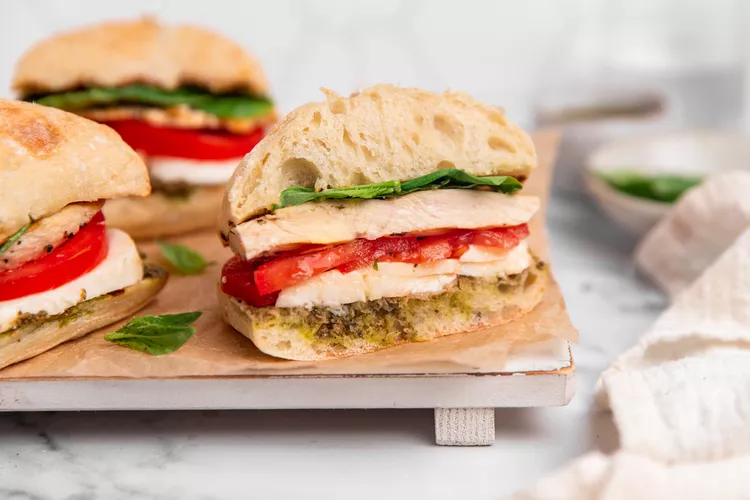

Fresh tomatoes, basil, mozzarella, and juicy chicken equals summer on a bun.
Grilling chicken can be tricky. Chicken breasts are very lean, so it is easy to make them dry and tough. Here are some tricks and tips for getting the juiciest, most flavorful grilled chicken breast for your sandwich:
The longer you marinate your chicken, the better! I recommend prepping and marinating your chicken the day before you grill it and letting it sit overnight.
Remember to preheat your grill for at least 15 minutes before you start cooking.
When your chicken is done cooking, let it rest for at least 5 minutes before serving.